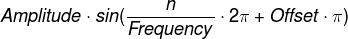

Average across windows
Tested only in Google Chrome on Linux
 n - number of samples
Display increment - dictates only how granular the data will be displayed in the waveform charts, doesn't affect DFT